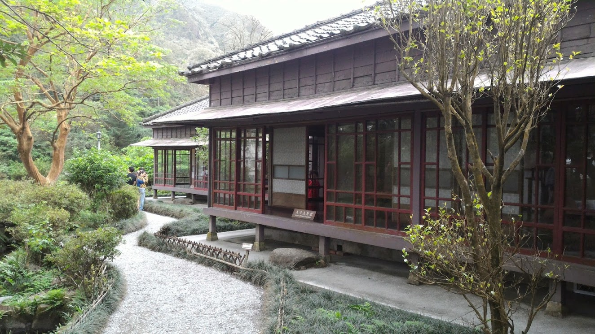
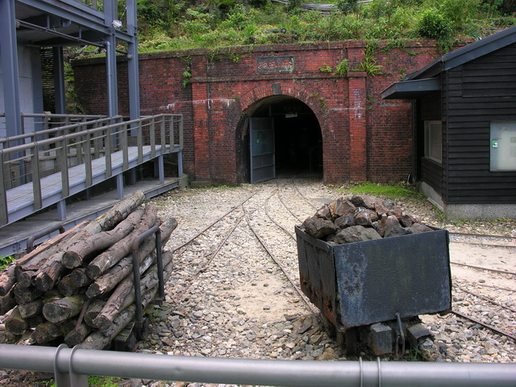
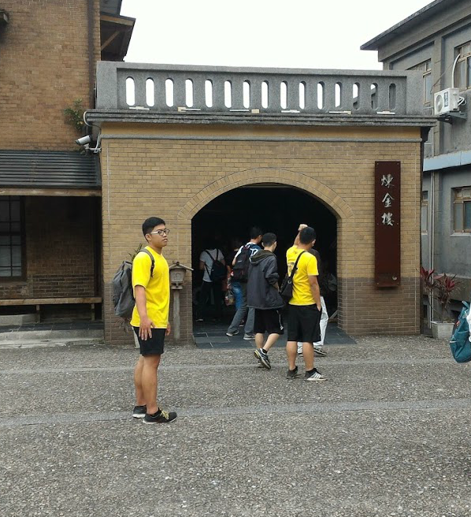
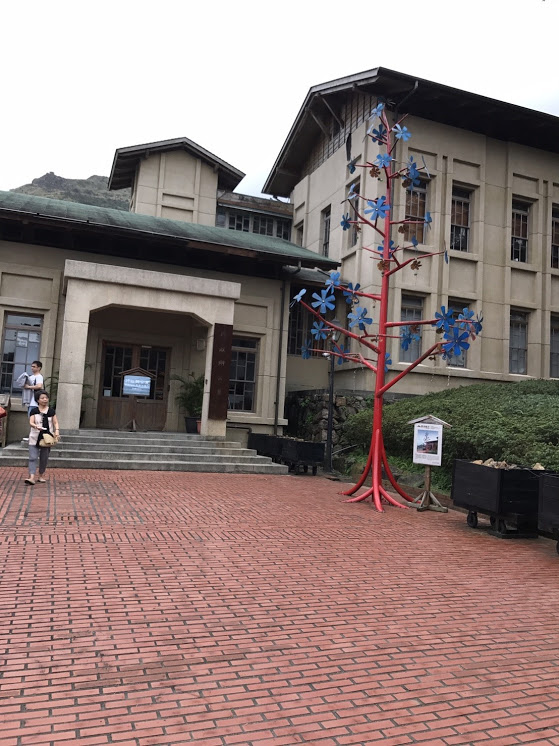
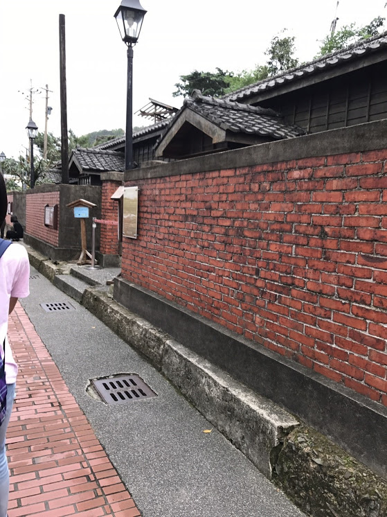

位於新北市瑞芳區金瓜石的山城內，佔地約達5公頃，是全台第一座以生態博物館為理念的博物館園區。
1890年（清光緒16年），時任台灣巡撫的劉銘傳帶領工人修建鐵道時，在河床意外發現金砂，
溯河而上至金瓜石遂發現金礦脈，
自此，清政府設礦業局開採後，開啟了金瓜石的採金工業。
日治時期，日本政府引進機器設備，一度讓金瓜石的產金量躍升亞洲第一。
中華民國（國民政府時期）臺灣金屬鑛業股份有限公司（簡稱臺金公司）金瓜石是台灣黃金採礦業的重要產地銅礦也是重要的產品之一。
隨著金、銅等貴金屬的竭盡金礦品質開始下降，於是轉為大規模機器露天開採來取代傳統坑道開採
除了博物館本身外，還包含了"金瓜石太子賓館"、"環境館"、昇平戲院、本山五坑、煉金樓、四連棟等。
黃金博物館
為昔日臺灣金屬鑛業公司的採礦辦公室改建而成。
太子賓館

日治時代所建的臨時行館，又稱第一賓館。為日治時期日本田中礦業株式會社為招待當時日本的皇太子（即後來的裕仁天皇）預 定視察金瓜石礦業，於1922年所興建的臨時行館。
建築類型屬傳統日式書院，融入西式空間，形成當時時興的『和洋式建築』
本山五坑

本山五坑主要是深入產金坑道，金瓜石地區的坑道總長度長達600多公里，而本山地區有9個坑道，近年來開放參觀的本山五坑，
除了入口那一段是原有的坑道之外，另外開鑿了一條出口用的坑道，實際的體驗長度約200公尺。
金瓜石於1972年停止開採金礦後，本山五坑於1978年撤收。
煉金樓

日治時期的煉金樓，曾經是存放黃金的場所。臺灣光復後臺灣金屬鑛業股份有限公司(臺金公司)籌備時期，
煉金樓曾短暫作為煉金工廠，後來煉金工廠遷移至水湳洞，煉金樓即轉為其他用途
環境館

環境館的前身「金光路55號」大約建於民國63年(西元1974年)左右，是臺灣金屬鑛業公司的俱樂部及餐廳，
後期則一樓部分全改為餐廳，二樓則規劃一半的空間作為圖書室，是當時金瓜石居民的休閒與飲食中心。
四連棟

四連棟，是金瓜石地區保存最完整的日式宿舍。為1930年代由日本鑛業株式會社所興建，提供當時的日籍職員及其眷屬居住。
國民政府時期，則改為臺金公司的員工宿舍。
四連棟為四戶相連，每戶都有各自的玄關、客廳、起居室、廚房、浴室、廁所等設備，前後也有小型花園。
順應著坡地高低差構築出具有高低層次的建築，基座外觀的人字砌駁崁、紅磚與黑瓦構成金瓜石山城獨特的地景特色。
昇平戲院

最早的戲台，興建於大正年間，原址在基山街106號東山旅社旁。
昭和年間，由吳樹桑、周天生等人合股，於現址九份豎崎路和輕便路的交叉口處，興建一棟一樓石造，二樓木造的建築，
並名之為「昇平座」。「昇平」取歌舞昇平之意，「座」為日本人所稱之表演場所。戰後因故「昇平座」易名為「昇平戲院」，並於民國50年代再次改建。
金瓜石的繁華歲月主要在於五、六零年代，隨著礦區關閉，金瓜石也蛻盡鉛華，只剩下天然的美景及濃郁的懷舊之情。